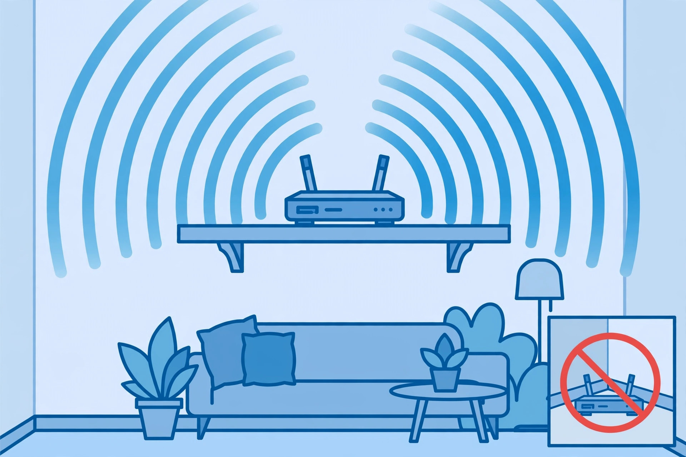
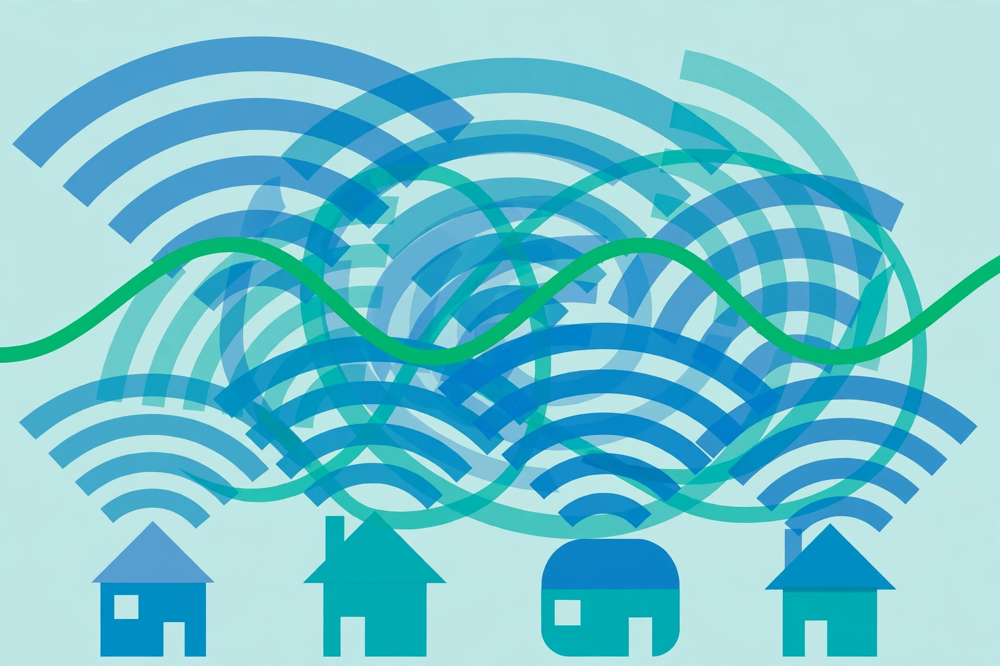
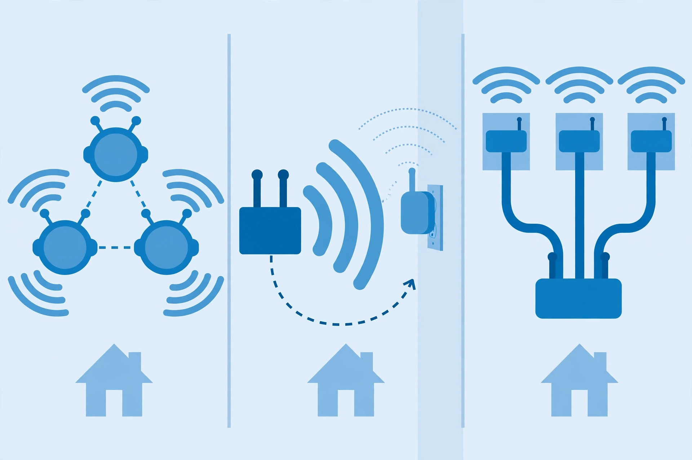
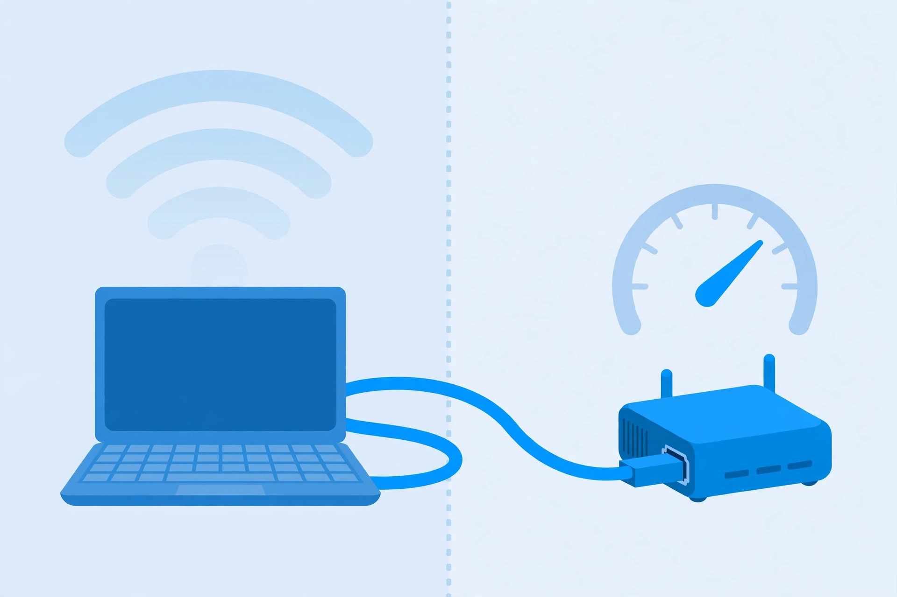
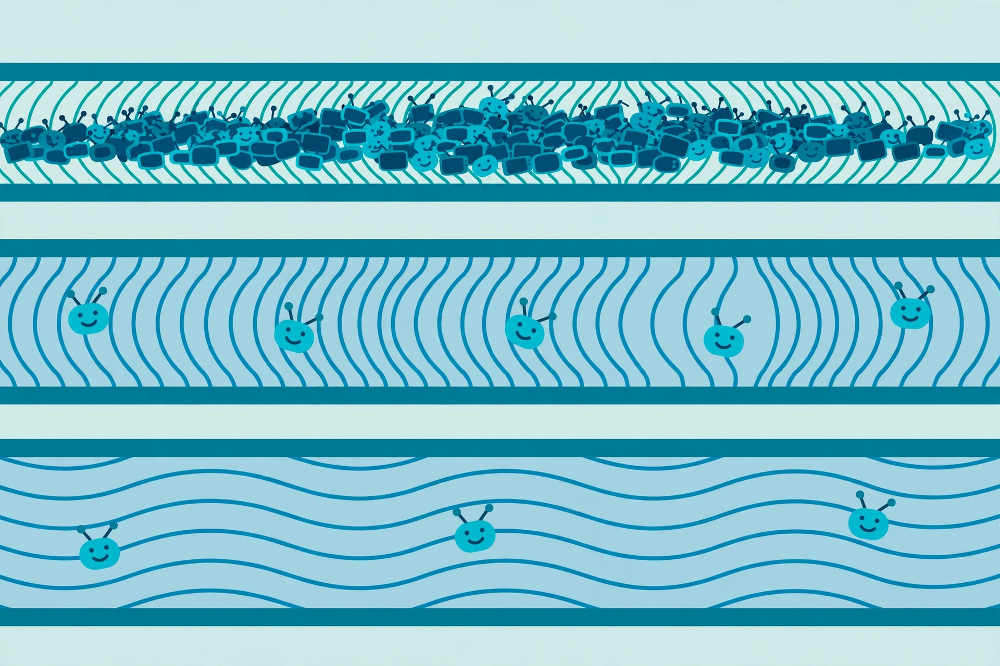
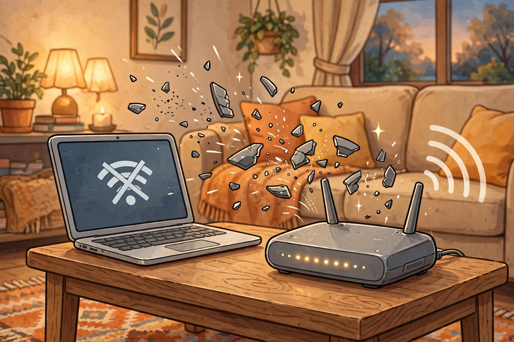
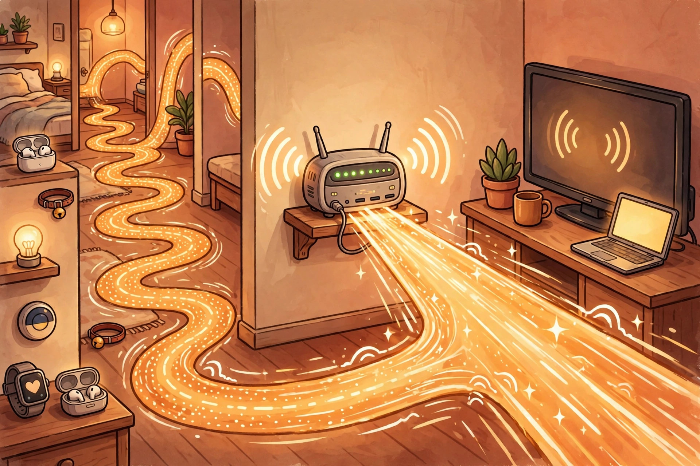

Start where most problems actually are
Before spending a dollar, check the order things usually go wrong: the router's
position, the channels it's using, and whether your internet connection itself is
the bottleneck. Only when those are sorted does new hardware make sense — and
then the choice between mesh, extenders, and access points matters more than
the brand on the box.
Guides
You cannot punch through masonry, so route around it: dB loss figures with their conflicts shown, nodes on the near side of the wall, and wired backhaul when the wall count is high. Numbered procedure with a success check.
Cable the desk, not the house: 0.3–1 ms wired latency against 2–10 ms on Wi-Fi with spikes past 50 ms — a per-device decision for the docked laptop, the NAS, calls, and the printer that earns nothing.
Full bars can still be bad Wi-Fi — RSSI measures strength, not clarity. Reconcile the conflicting charts against per-use targets, then run a same-device walk-test of your own house.
A game that disconnects and a game that stutters are different faults. Tell them apart with a latency-under-load test, then fix in order: wire the machine, then SQM, then placement.
Headline rates say 2 Gbps vs 2.5 Gbps. Measured results say 80–180 Mbps vs 850–1,200 Mbps. Audit your coax and circuits first, then buy the wiring your house already supports.
Five years old is not a replace date. Support life is: check end of security updates from the model's launch date, run a fault-isolation check, and only then decide.
Free geometry tests first — then the four options (extender, mesh, powerline, wired outdoor AP) matched to attached vs. detached reality.
Calls die on jitter, not megabits — the five-minute wired test that splits Wi-Fi faults from ISP faults, then fixes in diagnostic order.
Phones fine, gadgets failing is a compatibility signature: diagnose by failure stage, then build one permanent 2.4 GHz WPA2 IoT network instead of weakening the main one. Numbered procedure with a success check.
Provider peak, household peak, or neighbour peak — four speed tests (wired and Wi-Fi, midday and evening) name which clock is yours before any fix is applied.
Troubleshooting
Measure in three places, walk the signal path, reposition and re-aim the antennas, assign the right band — then, and only then, add coverage hardware halfway.
Troubleshooting
A numbered procedure with exact settings paths: forget and rejoin, driver updates, power-saving off — and the test that proves it worked.

Start here
The single biggest free Wi-Fi upgrade: central, elevated, and clear of the things that quietly kill signal.

Troubleshooting
Why the 2.4 GHz band is a crowded hallway, the only three channels that don't overlap, and how to pick a quiet one.

Buying decisions
The three ways to kill a dead zone, what each one actually costs you in speed, and which fits your home.

Troubleshooting
Is it your Wi-Fi or your internet? The wired test that answers it in two minutes, plus what to check before you call.

Concepts
What the generation names actually mean, what 6 GHz changes (and doesn't), and whether you should care yet.

Troubleshooting
Drops are a pattern, not a mystery: one device or all, one room or everywhere, random or on the hour — each pattern has its own fix.

Concepts
Neither band is "better" — each device has a right answer. A per-device assignment table, plus the two exceptions that flip the rule.
Concepts
Add up your own busiest hour from official per-activity figures, check upload separately, and find whether your bottleneck is the plan, the router, or the room.
Troubleshooting
Back up first, verify the exact model and hardware version, choose auto or manual update, and confirm the new version actually stuck.
Setup
Give visitors internet without giving them your network: isolation on, the right devices assigned, and a two-minute test that proves it works.
Troubleshooting
Measure at the TV first, compare with what a stream actually needs, then fix in order — one change at a time.
Measure in dBm first, then climb the ladder: router move, 2.4 GHz, mesh placed outside the dead zone, and the wired access point that ends it. Numbered procedure with a success check.
The admin password is not the Wi-Fi password: a numbered hardening procedure in an order that won't lock you out, sourced from FTC- and CISA-aligned checklists.